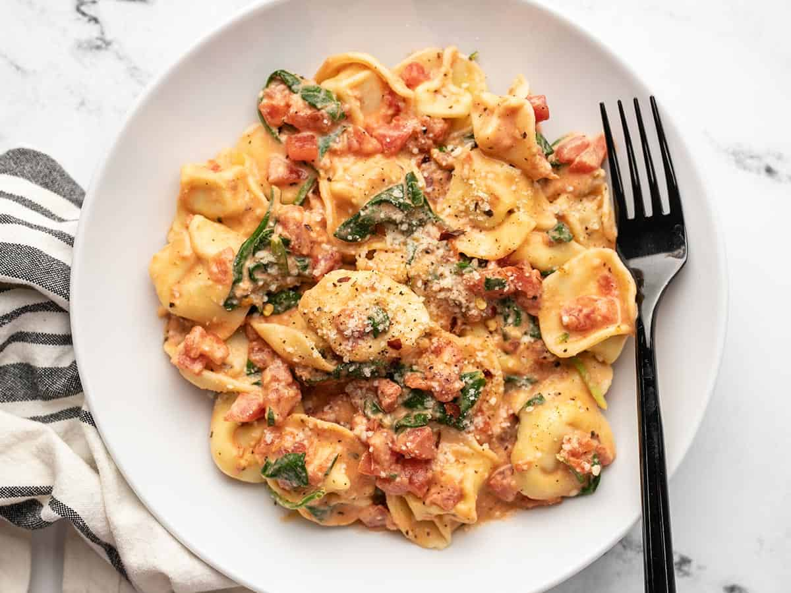

Tortellini

Description
Spinach Tortellini Skillet is an easy and hearty dinner recipe that comes together quickly and will make you want to come back for seconds!
Ingredients
- 4 cloves garlic ($0.32)
- 1 Tbsp olive oil ($0.13)
- 1 28oz. can petite diced tomatoes ($1.69)
- 1/2 tsp dried basil ($0.05)
- 1/2 tsp dried oregano ($0.05)
- 1/4 tsp Freshly cracked pepper ($0.02)
- 4 oz. cream cheese ($1.10)
- 19 oz. frozen cheese tortellini ($4.79)
- 2 cups fresh spinach ($0.60)
- 1/4 cup grated Parmesan ($0.36)
Steps
- Mince the garlic and add it to a large skillet with the olive oil. Sauté the garlic over medium heat for about one minute, or just until it becomes fragrant.
- Add the diced tomatoes (with juices), basil, oregano, and pepper to the skillet. Stir to combine and continue to cook and stir until the tomatoes are hot.
- Cut the cream cheese into chunks, then add it to the hot tomato sauce in the skillet. Continue to cook and stir until the cream cheese has melted into the tomatoes and created a smooth and creamy sauce (use a whisk, if needed).
- Meanwhile, bring a large pot of water to a boil for the tortellini. Once boiling, add the tortellini and continue to boil for about three minutes, or until they are all floating (make sure to check the package instructions for the recommended cook time). Drain the tortellini in a colander.
- While the tortellini is draining, roughly chop the spinach into bite-sized pieces. Add the chopped spinach to the sauce in the skillet and stir to combine, allowing the heat to wilt the spinach.
- Add the drained tortellini to the skillet and stir to combine with the sauce.
- Sprinkle the Parmesan over top and stir to combine. Give the tortellini a taste and adjust any salt or seasonings to your liking. Serve hot and enjoy!